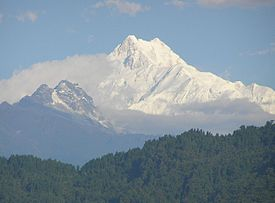
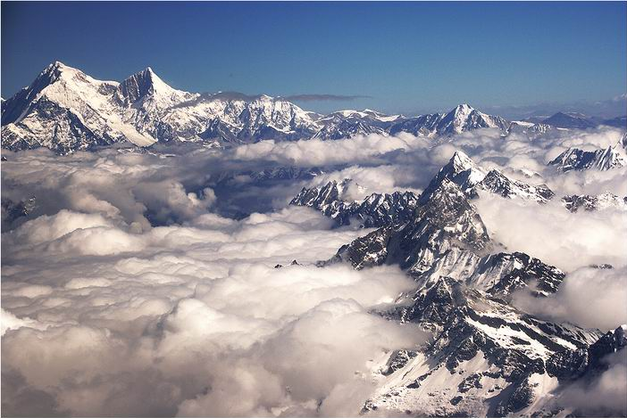

Broad-Peak

El Broad Peak forma parte del macizo de los Gasherbrum, en la zona del Baltistan, en la frontera de Pakistán con China, dentro del área del Sistema de los Himalayas conocida como Karakórum. La montaña se halla situada aproximadamente a una distancia de 8 km al sureste del K2. Su nombre inglés deriva de su ancha cumbre, que tiene una extensa longitud total cercana a un kilómetro y medio.El primer intento de escalar la cumbre del Broad Peak tuvo lugar en una tentativa de ascensión realizada por el alemán Karl Herligkoffer en 1954, cuyo objetivo inicial era ascender a la cumbre del Gasherbrum I. Por un problema para conseguir que los porteadores baltíes llevaran la carga hasta un punto más alto del glaciar Baltoro, en la zona conocida como Concordia, desistió de su intento, planteándose cambiar la escalada inicial del Gasherbrum I por el Broad Peak e intentando el ascenso por la arista suroeste. Sin embargo, a causa de una fuerte tormenta de nieve, con un frío extremo y vientos huracanados, no pudo conseguirse el objetivo.
 Inicio
Inicio
 Everest
Everest
 Annapurna
Annapurna
 Daulaghiri
Daulaghiri
 Gasherbrum
Gasherbrum
 k2
k2
 Cho-Oyu
Cho-Oyu
 GasherbrumII
GasherbrumII
Kanchenjunga
 Lhotsel
Lhotsel
 Makalu
Makalu
 Manaslu I
Manaslu I
 Nangaparbat
Nangaparbat
ShishaPangma